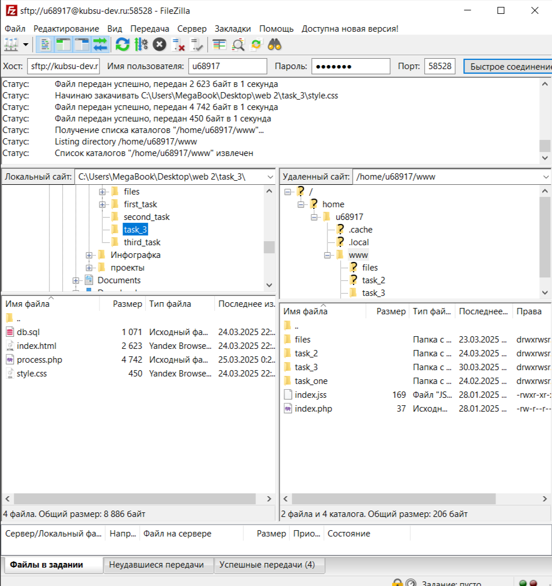
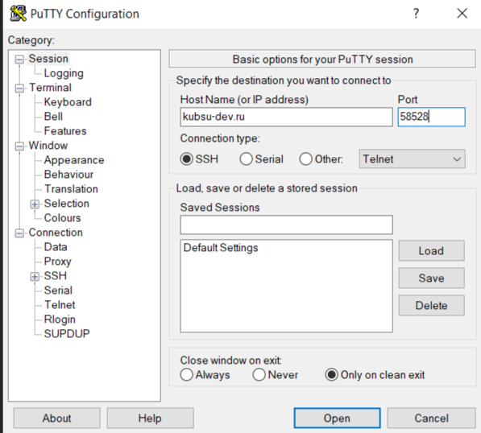
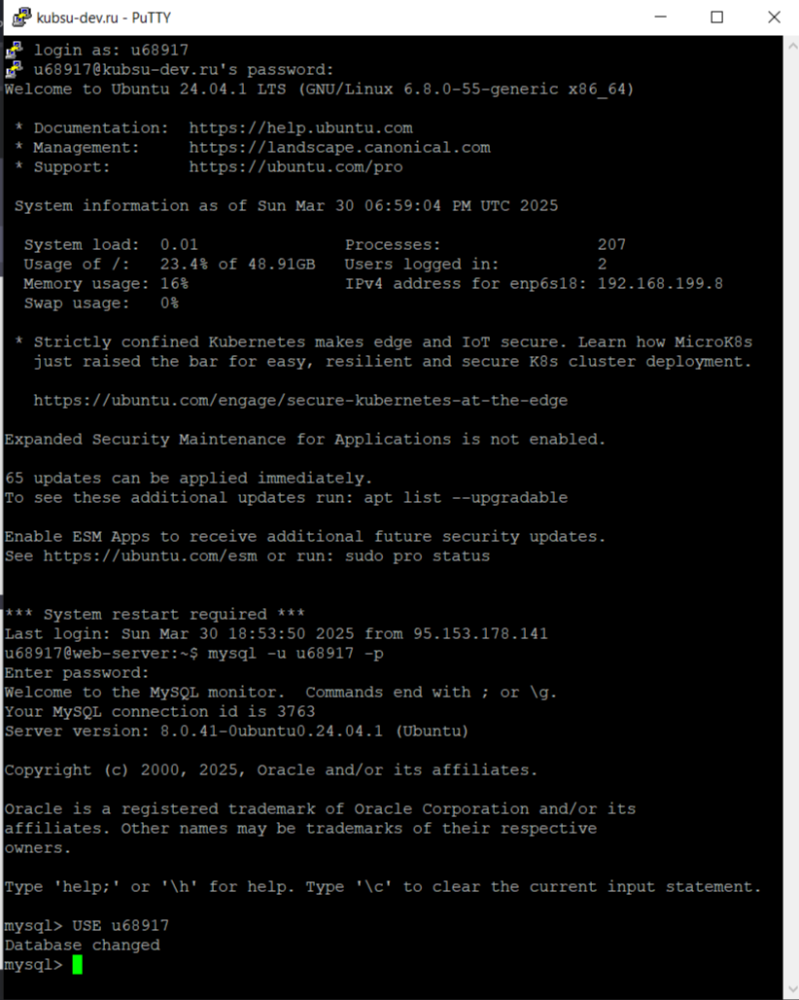
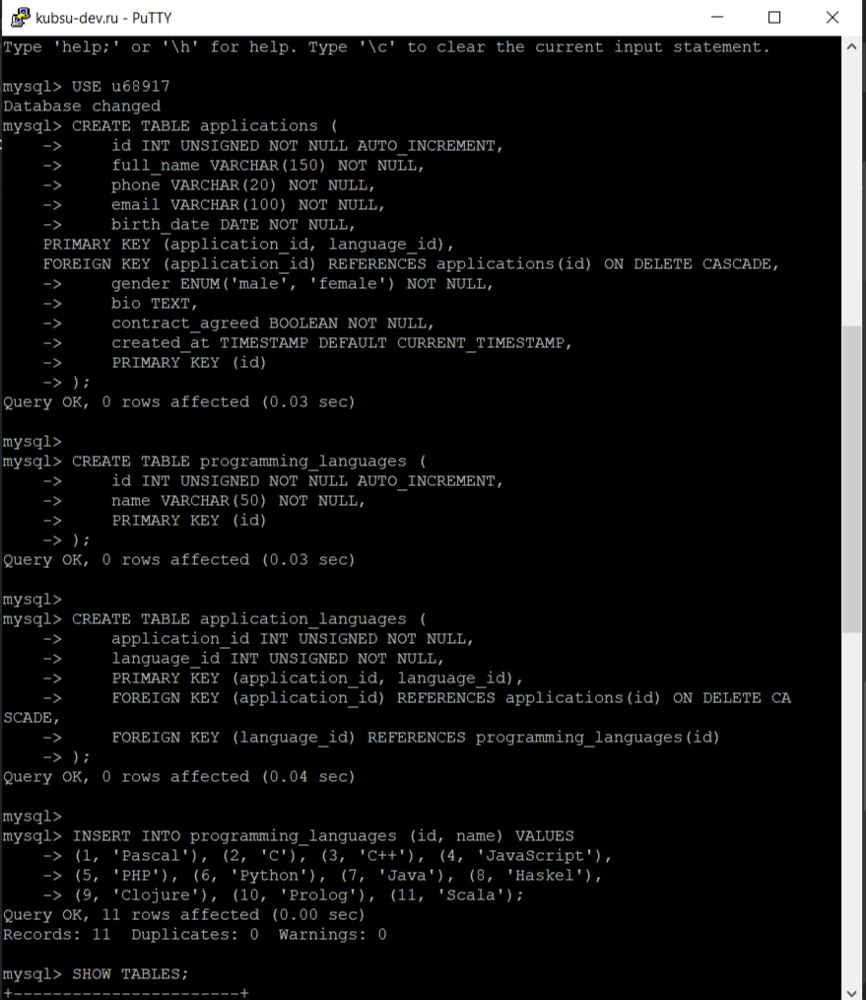
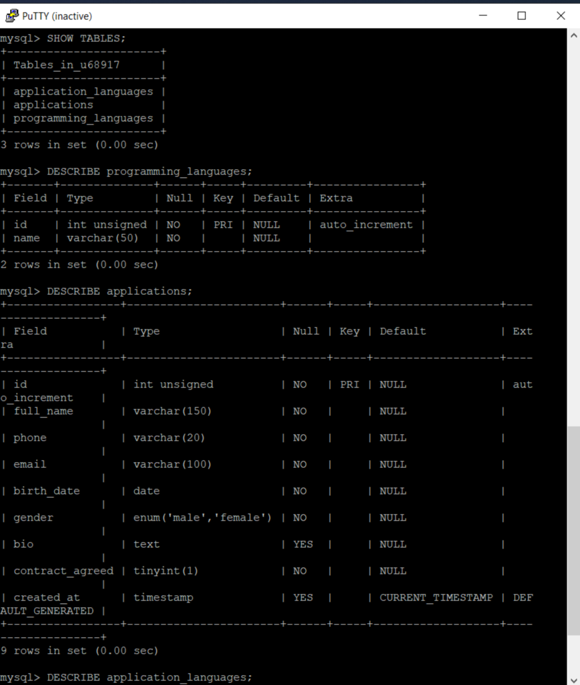
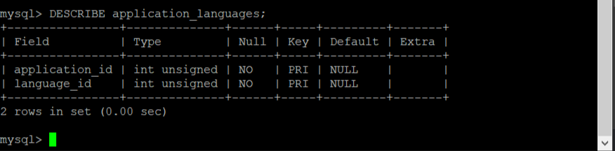
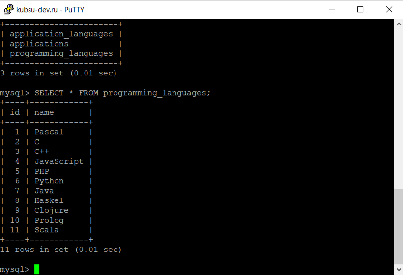
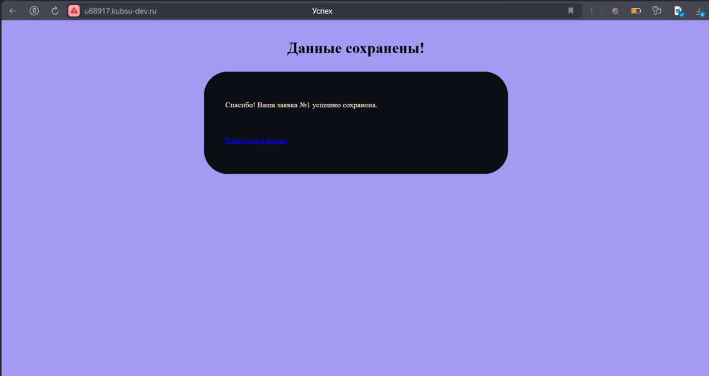

1. Загружаем файлы на учебный сервер с помощью FileZilla
2. С помощью клиента PuTTY подключаемся к учебному серверу, а затем к mysql. Переходим в бд с названием u68917.

3. Отправляем запросы на создание таблиц. Проверяем их создание.


4. Заполняем таблицу с языками программированния.
5. Заполняем форму и отправляем данные в бд. Проверяем запись данных в таблице.
